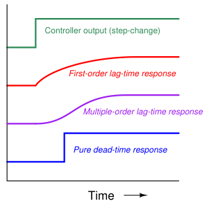
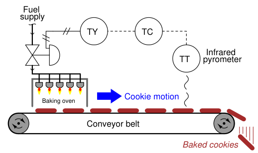
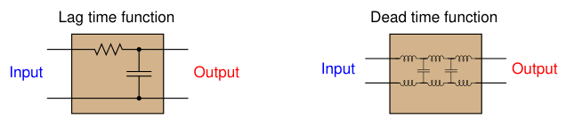
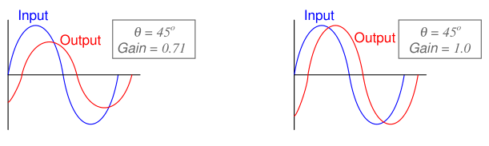
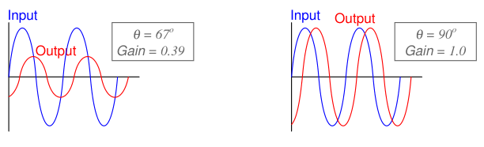
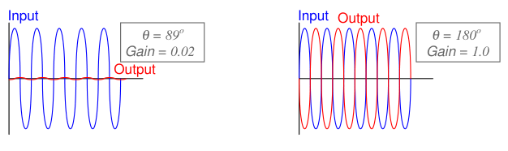
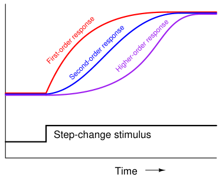

The original, as published: Tony R. Kuphaldt, Lessons In Industrial Instrumentation, Dead time. CC BY 4.0, https://creativecommons.org/licenses/by/4.0/. Imported as published, from https://www.ibiblio.org/kuphaldt/socratic/sinst/book/liii.pdf https://www.ibiblio.org/kuphaldt/socratic/sinst/book/liii.pdf
Lag time refers to a damped response from a process, from a change in manipulated variable (e.g. control valve position) to a measured change in process variable: the initial effect of a change in controller output is immediately seen, but the final effect takes time to develop. Dead time, by contrast, refers to a period of time during which a change in manipulated variable produces no effect whatsoever in the process variable: the process appears “dead” for some amount of time before showing a response. The following graph contrasts first-order and multiple-order lag times against pure dead time, as revealed in response to a manual step-change in the controller’s output (an “open-loop” test of the process characteristics):

Although the first-order response does takes some time to settle at a stable value, there is no time delay between when the output steps up and the first-order response begins to rise. The same may be said for the multiple-order response, albeit with a slower rate of initial rise. The dead-time response, however, is actually delayed some time after the output makes its step-change. There is a period of time where the dead-time response does absolutely nothing following the output step-change.
Dead time is also referred to as transport delay, because the mechanism of dead time is often a time delay caused by the transportation of material at finite speed across some distance. The following cookie-baking process has dead time by virtue of the time delay inherent to the cookies’ journey from the oven to the temperature sensor:

Dead time is a far worse problem for feedback control systems than lag time. The reason why is best understood from the perspective of phase shift: the delay (measured in degrees of angular displacement) between input and output for a system driven by a sinusoidal stimulus. Excessive phase shift in a feedback system makes possible self-sustaining oscillations, turning what is supposed to be negative feedback into positive feedback. Systems with lag produce phase shift that is frequency-dependent (the greater the frequency, the more the output “lags” behind the input), but this phase shift has a natural limit. For a first-order lag function, the phase shift has an absolute maximum value of −90o; second-order lag functions have a theoretical maximum phase shift of −180o; and so on. Dead time functions also produce phase shift that increases with frequency, but there is no ultimate limit to the amount of phase shift. This means a single dead-time element in a feedback control loop is capable of producing any amount of phase shift given the right frequency20. What is more, the gain of a dead time function usually does not diminish with frequency, unlike the gain of a lag function. Recall that a feedback system will self-oscillate if two conditions are met: a total phase shift of 360o (or −360o: the same thing) and a total loop gain of at least one. Any feedback system meeting these criteria21 will oscillate, be it an electronic amplifier circuit or a process control loop. In the interest of achieving robust process control, we need to prevent these conditions from ever occurring simultaneously.
20A sophisticated way of saying this is that a dead-time function has no phase margin, only gain margin. All that is needed in a feedback system with dead time is sufficient gain to make the system oscillate. 21Sometimes referred to as the Barkhausen criterion.
A visual comparison between the phase shifts and gains exhibited by lag versus dead time functions may be seen here, the respective functions modeled by the electrical entities of a simple RC network (lag time) and an LC “delay line” network (dead time):




As frequency increases, the lag time function’s phase shift asymptotically approaches −90o while its attenuation asymptotically approaches zero. Ultimately, when the phase shift reaches its maximum of −90o, the output signal amplitude is reduced to nothing. By contrast, the dead time function’s phase shift grows linearly with frequency (to −180o and beyond!) while its attenuation remains unchanged. Clearly, dead time better fulfills the dual criteria of sufficient phase shift and sufficient loop gain needed for feedback oscillation than lag time, which is why dead time invites oscillation in a control loop more than lag time. Pure dead-time processes are rare. Usually, an industrial process will exhibit at least some degree of lag time in addition to dead time. As strange as it may sound, this is a fortunate for the purpose of feedback control. The presence of lag(s) in a process guarantees a degradation of loop gain with frequency increase, which may help avoid oscillation. The greater the ratio between dead time and lag time in a loop, the more unstable it tends to be.
The appearance of dead time may be created in a process by the cascaded effect of multiple lags. As mentioned in an earlier subsection, multiple lags create a process response to step-changes that is “S”-shaped, responding gradually at first instead of immediately following the step-change. Given enough lags acting in series, the beginning of this “S” curve may be so flat that it appears “dead:”

While dead time may be impossible to eliminate in some processes, it should be minimized wherever possible due to its detrimental impact on feedback control. Once an open-loop (manualmode step-change) test on a process confirms the existence of dead time, the source of dead time should be identified and eliminated if at all possible. One technique applied to the control of dead-time-dominant processes is a special variation of the PID algorithm called sample-and-hold. In this variation of PID, the controller effectively alternates between “automatic” and “manual” modes according to a pre-programmed cycle. For a short period of time, it switches to “automatic” mode in order to “sample” the error (PV −SP) and calculate a new output value, but then switches right back into “manual” mode (“hold”) so as to give time for the effects of those corrections to propagate through the process dead time before taking another sample and calculating another output value. This sample-and-hold cycle of course slows the controller’s response to changes such as setpoint adjustments and load variations, but it does allow for more aggressive PID tuning constants than would otherwise work in a continuously sampling controller because it effectively blinds22 the controller from “seeing” the time delays inherent to the process.
All digital instruments exhibit dead time due to the nature of their operation: processing signals over discrete time periods. Usually, the amount of dead time seen in a modern digital instrument is too short to be of any consequence, but there are some special cases meriting attention. Perhaps the most serious case is the example of wireless transmitters, using radio waves to communicate process information back to a host system. In order to maximize battery life, a wireless transmitter must transmit its data sparingly. Update times (i.e. dead time) measured in minutes are not uncommon for battery-powered wireless process transmitters.
22An interesting analogy is that of a narcoleptic human operator manually controlling a process with a lot of dead time. If we imagine this person helplessly falling asleep at periodic intervals, then waking up to re-check the process variable and make another valve adjustment before falling asleep again, we see that the dead time of the process disappears from the perspective of the operator. The operator never realizes the process even has dead time, because they don’t remain awake long enough to notice. So long as the poor operator’s narcolepsy occurs at just the right intervals (i.e. not too short so as to notice dead time, and not too long so as to miss important changes in setpoint or load), good control of the process is possible.